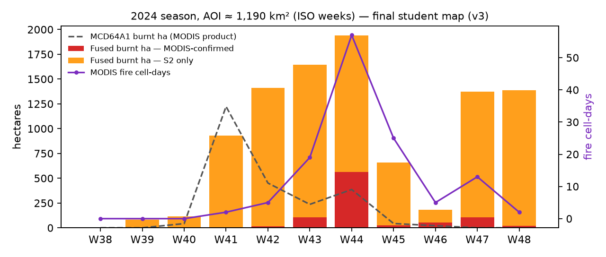
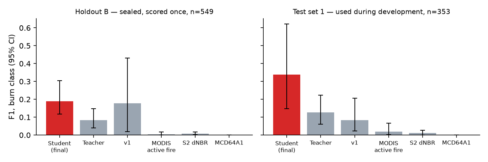

A weekly now-cast tells the district nodal officer / PPCB field coordinator for the Nabha–Amloh–Fatehgarh Sahib–Patiala belt which village clusters burnt paddy residue (parali) this week, how much, and how sure we are. Every Monday of the Oct–Nov season the officer picks about 8 clusters for the flying squad and for awareness and CRM-machinery visits. The product is a ranked, named list with newly burnt hectares, the change versus last week, and an evidence flag: MODIS-confirmed, Sentinel-2-only, or MODIS-only (Sentinel-2 blind). AOI: 76.10–76.45 E, 30.36–30.69 N (about 1,190 km², Sentinel-2 tile 43RFP). Season: 2024-09-20 to 2024-11-30. This is a historical replay, not a live service. The student uses the next clear observation, so weekly estimates can use information acquired after that week. Operational Monday decisions have not been evaluated.
derived_from links and a parameter hash. Ingestion and ARD reuse current scenes; fusion and later stages rebuild. Bumping the ARD version rebuilt all 27 scenes automatically.site/index.html; manual publication via .github/workflows/refresh.yml.paraliwatch label-page reference/testB writes a self-contained labelling page (same chips, keys 1/0/9, CSV export in the pipeline's format) so a human can replace any AI interpreter.The v3 map classifies 9,722 ha as burnt over the season; 9.2% are MODIS-confirmed (median MODIS re-dating 1 day). v1 mapped 18,133 ha; the haze mask removed the week-47 spike, and the student rejects much of the tillage that v1 counted. Weekly hectares (MODIS column: fire cell-days):
| Week | W39 | W40 | W41 | W42 | W43 | W44 | W45 | W46 | W47 | W48 |
|---|---|---|---|---|---|---|---|---|---|---|
| Confirmed ha | 0 | 0 | 3 | 17 | 107 | 564 | 25 | 52 | 104 | 18 |
| S2-only ha | 84 | 115 | 928 | 1395 | 1536 | 1374 | 634 | 130 | 1268 | 1368 |
| MCD64A1 ha | 0 | 43 | 1223 | 451 | 237 | 386 | 43 | 21 | 0 | 0 |
| MODIS fire cell-days | 0 | 0 | 2 | 5 | 19 | 57 | 25 | 5 | 13 | 2 |
Week 47 holds burns from the Nov 9–17 smog gap first seen on the Nov 19 scene; MODIS re-dates the confirmed ones. Late-season caveat: W47–W48 Sentinel-2-only area (about 1,300 ha/week) coincides with the weakest holdout-B interval (late November, F1 0.08) and is likely partly tilled or emerging-wheat commission; treat it as potentially inflated mapped area, not a statistical bound.

Design. Design-based assessment (Olofsson et al. 2014), stratified on the map: mapped burn / teacher-only burn / other change / stable. Holdout B is the headline: 552 points on three new intervals (2024-10-13→10-23, 10-30→11-07, 11-19→11-29), 60/40/60/24 per interval (other change over-allocated, since missed burns there dominate the recall interval), in 1 km cells disjoint from all training and earlier test points. It was drawn from the v2 maps and sealed before any further model development, then scored once on the final model. Interpreters A and B labelled blind from chips (Cohen’s κ 0.551); a blind adjudicator C resolved 155 of 158 disputed or unclear points. The earlier 360-point test set 1 was scored four times during development and is now reported only as a development set. Values are stratum-weighted estimate [95% bootstrap CI].
| Map | Holdout B, adjudicated (549 points, 67 burns) | Unanimous A=B (394 pts, 24 burns) | Test set 1 (dev) | ||
|---|---|---|---|---|---|
| Precision | Recall | F1 | F1 | F1 | |
| v3 student | 0.272 [0.169, 0.403] | 0.146 [0.082, 0.299] | 0.190 [0.117, 0.306] | 0.378 [0.234, 0.506] | 0.339 |
| teacher | 0.109 | 0.068 | 0.084 [0.040, 0.151] | 0.116 | 0.126 |
| v1 | 0.340 | 0.120 | 0.178 [0.021, 0.425] | 0.015 | 0.084 |
| MODIS active fire | 0.005 | 0.006 | 0.005 | – | – |
| Sentinel-2 dNBR | 0.006 | 0.016 | 0.008 | – | – |
| MCD64A1 | 0 | 0 | 0.0 | – | – |
Student overall accuracy is 0.980; MCD64A1, which maps nothing, scores 0.984. Accuracy reflects the unburnt majority and is not informative.

Error analysis. κ was 0.55 against 0.87 on test set 1: in late November A read dull grey-green tilled patches as emerging wheat, B as char. Adjudicator C called burns on 28% of disputed points vs 6% of unanimous ones, so results depend on the reference: resolving disputes as A gives 0.374, as B 0.215. Unanimous-subset F1 (0.378) uses an easier cohort; it is not an upper confidence bound on 0.190. By interval (adjudicated): early 0.32, peak 0.18, late November 0.08. Omission dominates (1.38% of area vs 0.63% commission), concentrated in the “other change” stratum. The fall from 0.34 (test set 1) to 0.19 is the expected price of development-set reuse plus a harder late interval; holdout B’s interval is also much tighter (width 0.19 vs 0.46–0.48), which was its purpose.
Training changes in v3. Active learning (round 3): 240 transitions nearest the student threshold (one per 1 km cell) plus 80 mapped-burn audits, 262 usable labels. They are not a probability sample, so they are never scored and enter training only outside each held-out spatial block. Student nested spatial-CV on the 600 scored labels (3 km blocks, teacher refit per fold): AUC 0.899, F1 0.573 → 0.592 with active learning, threshold 0.25. This CV F1 is mildly optimistic (the AL batch and threshold both use the labels it is scored on, and design weights only approximate inclusion probabilities); holdout B is the held-out estimate against AI-interpreted reference labels. A Codex verification found no holdout-B leakage, and reference/testB/scoring_receipt.json records the model that first scored it, so a re-score is flagged. Pseudo-labels are now excluded at 1 km-cell level from gold and sealed cells. Self-training (510 pseudo-labels) scored 0.581 < 0.592 and was rejected by the gate that adopted it in v2. Also rejected: field-object voting (objects.py, erased scars), the v1 char-albedo gate, and a 0.5 probability threshold (mapped about 80% of the AOI).
Limit of the reference. All interpreters were AI vision models (Claude Sonnet sub-agents A, B; Claude Opus adjudicator C) reading 20 m chips: a transparent stand-in, not field truth. Chips and label files are in reference/; the label desk lets a human relabel and paraliwatch evaluate recomputes everything.
Interpretation. The student improves on the teacher, but its holdout F1 is only 0.190. The retired v1 comparison is historical: its raster is not committed and is unavailable on a fresh clone. Reference and training label quality remain major constraints.
Strong: temporal. Four overpasses a day, thermal fire detection, a daily fire mask. Weak: spatial. 1 km fire pixels and 500 m burned area against fields of about 0.5–2 ha. MCD64A1 mapped 0.0 F1 here. Overpasses (about 10:30, 13:30 and night) miss late-afternoon burning, and short fires can occur between overpasses. VIIRS is a candidate for finer active-fire evidence.
Response: keep MODIS as the primary sensor for supervision and timing, and fuse Sentinel-2 (20 m) for field scale, in three roles:
Verdict: a prototype for triage, requiring field validation. The workflow is suitable for planning verification visits; its operational usefulness still needs testing. Holdout-B precision of 0.272 [0.169, 0.403] with recall of 0.146 and AI-made reference labels (κ 0.55) cannot support action against an individual farmer. What it takes:
git clone https://github.com/shuhulx/parali-watch.git cd parali-watch make run # ingest, ARD, fusion, features, evaluation, dashboard (cold ~20 min) make serve # open http://localhost:8000
To view the committed demo without rebuilding: make demo, then open http://localhost:8000. The private repository requires reviewer access. Rebuilding requires uv and network access to Planetary Computer. Model, labels and limits: docs/MODEL_CARD.md; design: docs/ARCHITECTURE.md; AI usage: docs/AI_LOG.md.